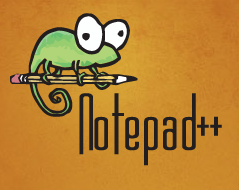
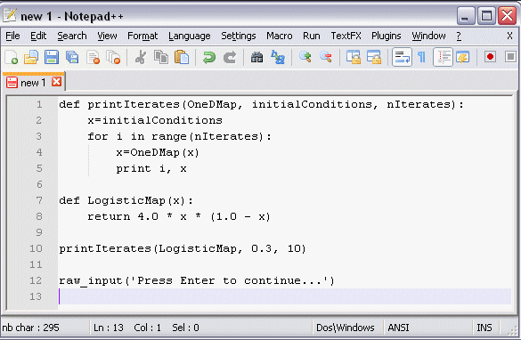

Computer Programming in Python
by Colm Sloan
Table of contents
What is a program?
A sequence of instructions that a computer can interpret and execute. WordNet, Princeton
What is a programming language?
A programming language designed to facilitate the writing of computer programs. Collins English Dictionary
What is source code?
Any collection of computer instructions (possibly with comments) written using some human-readable computer language, usually as text. Wikipedia
Interpreter
- takes source code and executes it on the fly
- no compile time can mean faster development
- usually slower than compiled executables
- Python, Ruby, Lua are interpreted languages
Before we begin
source control
- git
- code versioning software
- bitbucket.com
style guide
- PEP 8 style guide
- http://legacy.python.org/dev/peps/pep-0008/
- check for style guide violations - http://pep8online.com
Python
- procedural
- imperative - stateful
- doesn't require manual memory management
- structured - not just jumps
- case and whitespace sensitive
- battle tested - 1991
- beloved language - has won people's choice awards
- currently 8th most popular language (TIOBE index)
Python REPL
- Read, Evaluate, Print, Loop
- start by running Python executable
- Python executable is normally located 'C:/Python33/python.exe'
- end by entering: exit()
Numbers
| type | description | examples |
|---|---|---|
| int | integer (whole number) | 62, -3 |
| float | real number (all numbers) | 5.9, -0.004 |
- the arithmetic data types
Operations and operators
- programming is a sequence of operations performed on data
- an operator in Python is a symbol associated with an operation
- infix notation: x operator y, e.g. 2 + 3
- examples of numeric operators
| symbol | name |
|---|---|
| + | plus |
| - | minus |
| * | multiply |
| / | divide |
| ** | exponent |
| % | remainder/modulo |
Arithmetic operators
2 + 3 # 5
6 - 1.5 # 4.5
5 * 9 # 45
8 / 4 # 2
7 ** 2 # 49
10 % 3 # 1
- values calculated left to right
Arithmetic operators
3 * 5 + 2 # 17
3 + 5 * 2 # 13
(3 + 5) * 2 # 16
- follows the BOMDAS rules
- B - brackets
- O - operations
- M - multiply
- D - divide
- A - add
- S - subtract
Booleans
- the logical data type
- a boolean can only have a value of True or False
- True and False must start with capital letters
- remember, Python is case sensitive
Relational operators
- a relational operator tests whether a particular relationship is true
- e.g. 5 > 3 is True but 5 < 3 is False
- Python has the following relational operators
| symbol | name |
|---|---|
| < | less than |
| > | greater than |
| <= | less than or equal to |
| >= | greater than or equal to |
| == | equal to |
| != | not equal to |
Relational operators
2 > 3 # False
5 < 3 # False
7 >= 1 # True
7 >= 7 # True
9 <= 8 # False
4 != 5 # True
6 == 6 # True
- these Boolean expressions use relational operators
Relational operators
4.0 > 1.6 # True
5 < 3.7 # False
"happy" != "sad" # True
"money" == "money" # True
- other data types can use relational operators too
Strings
- the character data type
- a sequence of characters
- enclosed between apostrophes or double quotes
- for example, 'Hello there!', "8353+@4db3"
String operators
"bat" + "man" # "batman"
"Thank you! " * 3 # "Thank you! Thank you! Thank you! "
What is a variable?
Something able to change or be adapted. Oxford Dictionary
- a symbol associated with a value
- data types of variables
- in Python, a data type and symbol (name) associated with a value held in an address in memory
Variable naming
- style guide specifies variable should be lower case and use underscores to separate words in name
- variable names must start with a letter
- a variable 2v would be illegal
- symbols such as +:*=., cannot be part of a variable name
- a language keyword cannot be used as a variable name
- valid variable names: age, num_employees, v2, x
- variable names are case sensitive
- variable should have meaningful names
Assignment operator
my_variable = 3
- declare and initize variable
- declare is to make known the existence of something e.g. a variable
- initialize means to give an initial value
- my_variable is declared and initialized to a value of 3
- associates the name "my_variable" with the value 3
- association made using assignment operator (=)
Assignment operator
a = 3
b = 2 + 3
c = b - 1
d = a * c
x = 5 < 4
- these variables are assigned the result of an expression
- an expression is a anything that returns a value
- variable hold values that can be accessed later
naming exercises
Which of the following are valid Python variable names?
shots_on_target
price$
engine.cc
AGE
constraint-based
int
t
if
colm's_birthday
Moving away from the REPL
- the REPL is only useful for very small programs
- for bigger programs, we need a text editor to build scripts
Notepad++
 Our first script
Write the following code into your Notepad++ file and save it as first_script.py in a newly created folder named after today's date.
print(3)
Our first script
- Click on the Windows "start" button and type "cmd" to open a new command console.
- Use the "cd" command to "change directory" to the directory in which first_script.py was saved.
- Type "dir" to see the contents of the directory to be sure the file is present.
- Enter "c:/python33/python.exe first_script.py" to run the file. (We assume Python is in the class path.)
Our first script
print(3)
- the Python script was executed by the Python interpreter
print(3)
- a function for outputting values to the command console or files
- function name immediately followed by parentheses ()
- function input inside the parentheses
- more on functions later
print(3)
print(5)
print(41)
- the file is interpretted from top to bottom, left to right
- there can be multiple lines of code in the executed file
- print and other function can be executed multiple times
print("Hello, World!")
- we can print strings of characters a.k.a. strings
my_variable = 3
print(my_variable)
- we can print variables
- pass the variable as input to the print function
my_variable = 3
print("The value of my variable is", my_variable)
- we can print strings and variables together
- the print function can accept many inputs
- inputs are separated by commas
- the variable is appended to the string
- note that a space is implicitly added before the variable
x = 3
y = 4
print("The value of x plus y is", x + y)
- we can print values calculated within the print input
printing multiple variables
some_variable = 3
some_other_variable = 4
print("Some variable is", some_variable, "and the other is", some_other_variable)
- by default, the print function prints a new line
- so we can print everything together or on separate lines
User input
user_input = input("Enter anything and press enter: ")
print("The user input is", user_input)
- we can take user input from the console
- input is a function, like print
- the input function takes a value to be displayed in the console and waits for user input
- the input returns a string entered by the user
User input
user_word = input("Enter a word: ")
super_word = "super " + user_word
print("The super version of the word is", super_word)
- add two strings together (concatenates strings)
User input
x = input("Enter an integer: ")
y = x * 5
print("input * 5 is", y)
- what will this give us?
Cast user input
string_user_input = input("Enter an integer: ")
integer_user_input = int(string_user_input)
z = integer_user_input * 5
print("input * 5 is", z)
- the input function returns a string
- int is a function that accepts one string value and returns the integer equivalent
- the process of changing a value from one data type to another is called "casting"
- the function name is similar to the data type to which the variable is being cast
Cast user input
# take input and cast to int on one line
x = int(input("Enter the first number: "))
y = x + 10
print("The sum is", y)
- multiple functions can be called on the same line
- the innermost parentheses are evaluated first
- the output of one function is the input of the immediate outer function
Cast user input
x = int(input("Enter the first integer: "))
y = int(input("Enter the second integer: "))
z = x + y
print("The sum of", x, "plus", y, "is", z)
- we can call functions multiple times like this just as before
Cast user input
# take input and cast it to float on one line
x = float(input("Enter a real number: "))
y = x + 8
print("sum is", y)
- float is a function that casts a variable to a floating point (real) number
Cast user input
x = 10.0
y = 3.0
print(x, "divided by", y, "is", x / y)
- use a decimal point to indicate a number is a float
Input/output exercise 1
Adds two and three and print the result.
Input/output exercise 2
Add two and three and print, "2 plus 3 equals 5", where the 5 is a variable that holds the result of adding two and three.
Input/output exercise 3
Take a numeric input from the user and print the value of the input multiplied by 10.
Input/output exercise 4
Take two numeric inputs from the user and print the value of the first minus the second.
Input/output exercise 5
Take an integer from the user and prints True if the input is less than 6. The printed result should mention the value of the input variable, e.g. It is True that the number 4 is less than 6.
Input/output exercise 6
Newton's second law of motion is F = ma, where F is force, m is mass, and a is acceleration. Take values for m and afrom the user and print the value of F.
Input/output exercise 7
Einstein's famous formula is E = mc2. Take values for m from the user, give the correct constant value to c and print the value of E. Remember operator precedence.
Input/output exercise 8
Newton's law of gravitation is shown in the wiki page. Take values for m1, m2 and r from the user. Give G the value of the gravitational constant. Print the final value F.
Comments
# Author: Colm Sloan # Purpose: Print and comment tutorial # Date: yyyy-mm-dd # Lincense: MIT print("Hello, World!") # prints to console print("Good bye.") # prints more